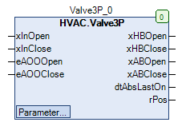

Valve3P (FB)¶
FUNCTION_BLOCK Valve3P
Short Description¶
Control of a 3-point valve drive and calculation of the valve positionIn addition, the 3-point drive is protected by a blocking protection function.Typical application: Control of a 3-point valve drive in a heating circuit
Portrayal¶

Interfaces¶
Inputs¶
Name Datatype
Range
Init-Value
Function
xInOpen BOOL Requirement - Valve opening
xInClose BOOL Requirement - Valve closure
eAOOOpen HVACTYPES.eManBin HVACTYPES.eManBin.Auto, HVACTYPES.eManBin.ManOff, HVACTYPES.eManBin.ManOn Operating mode of manual override - hardware for the valve opening
eAOOClose HVACTYPES.eManBin HVACTYPES.eManBin.Auto, HVACTYPES.eManBin.ManOff, HVACTYPES.eManBin.ManOn Operating mode of manual override - hardware for the valve closing
Outputs¶
Name Datatype
Range
Init-Value
Function
xHBOpen BOOL Release - Valve opening after manual override
xHBClose BOOL Release - valve closing after manual override
xABOpen BOOL Release - Valve opening before manual override
xABClose BOOL Release - valve closing before manual override
dtAbsLastOn DATE_AND_TIME Startdate / -Timepoint of the last blocking protection process
rPos REAL 0.0 ... 100.0 Current valve position
Setpoints / Parameters¶
Name Datatype
Range
Init-Value
Function
tDuration TIME 120s Operating time of the drive
udiAbsTime UDINT 0 bis 3600s 200s Time duration of the blocking protection process
todAbsStartTime TOD TOD#09:00:00 Uhr Time point of the blocking protection process
eAbsDay eDoW eDow.Montag Weekday of blocking protection process
eManModeOpen eMANBIN eMANBIN.Auto, eMANBIN.Off, eMANBIN.On eMANBIN.Auto Operating mode of manual override - Valve opening
eManModeClose eMANBIN eMANBIN.Auto, eMANBIN.Off, eMANBIN.On eMANBIN.Auto Operating mode of manual override - Valve closure
Functional description¶
General¶
Blocking protection process¶
Example
Prerequisite for the use of the Abs3P functional component
xABOpen enable - valve opening before manual override¶
xInOpen Blocking protection process
xABOpen Notes
FALSE FALSE FALSE Request not active, no blocking protection process
X TRUE Section 1: TRUE Section 2: FALSE
Blocking protection process active
TRUE FALSE TRUE Request active, no blocking protection process
*xABClose*enable - valve closure before manual override¶
xInClose Blocking protection process
xABClose Notes
FALSE FALSE FALSE Request not active, no blocking protection process
X TRUE Section 1: FALSE Section 2: TRUE
Blocking protection process active
TRUE FALSE TRUE Request active, no blocking protection process
xHBOpen enable - valve opening after manual override¶
xABOpen eManModeOpen xHBOpen Notes
FALSE eMANBIN.Auto FALSE Manual override module in automatic mode
TRUE eMANBIN.Auto TRUE Manual override module in automatic mode
X eMANBIN.On TRUE Manual override module in manual mode On
X eMANBIN.Off FALSE Manual override module in manual mode Off
xHBClose enable - valve closing after manual override¶
xABClose eManModeOpen xHBClose Notes
FALSE eMANBIN.Auto FALSE Manual override module in automatic mode
TRUE eMANBIN.Auto TRUE Manual override module in automatic mode
X eMANBIN.On TRUE Manual override module in manual mode On
X eMANBIN.Off FALSE Manual override module in manual mode Off
Forced control of manual overrides of the outputs¶
rPos current valve position¶
Visualization¶
Information¶
Element Authors
Date
Version Note
Function
Adam Bartod 11.2017 1.0 Ursprungsversion Programming
Adam Bartod 11.2017 1.0 Ursprungsversion Test Jochen Reu / 11.2017 1.0 Ursprungsversion Documentation
Jochen Reu 11.2017 1.0 Ursprungsversion
Codesys¶
- InOut:
Scope Name Type Initial Comment Input xInOpen BOOL Requirement - Valve opening
xInClose BOOL Requirement - Valve closure
eAOOOpen eManBin Operating mode of manual override - hardware for the valve opening
eAOOClose eManBin Operating mode of manual override - hardware for the valve closing
Output xHBOpen BOOL Release - Valve opening after manual override
xHBClose BOOL Release - valve closing after manual override
xABOpen BOOL Release - Valve opening before manual override
xABClose BOOL Release - valve closing before manual override
dtAbsLastOn DT Startdate / -Timepoint of the last blocking protection process
rPos REAL Current valve position
Input tDuration TIME TIME#2m0s0ms Operating time of the drive
udiAbsTime UDINT 200 Time duration of the blocking protection process
todAbsStartTime TOD TIME_OF_DAY#9:0 Time point of the blocking protection process
eAbsDay eDoW eDow.Monday Weekday of blocking protection process
eManModeOpen eMANBIN eMANBIN.Auto Operating mode of manual override - Valve opening
eManModeClose eMANBIN eMANBIN.Auto Operating mode of manual override - Valve closure